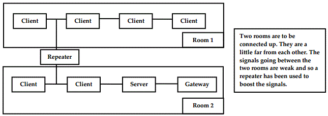
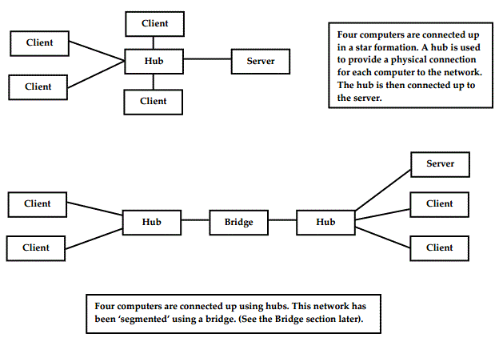

<div id="jsn-maincontent" class="span9 order1 row-fluid">
  <div id="jsn-maincontent_inner">
    <div id="jsn-centercol">
      <div id="jsn-centercol_inner">
        <div id="jsn-mainbody-content" class="jsn-hasmainbody">
          <div id="jsn-mainbody-content-inner1">
            <div id="jsn-mainbody-content-inner2">
              <div id="jsn-mainbody-content-inner3">
                <div id="jsn-mainbody-content-inner4" class="row-fluid">
                  <div id="jsn-mainbody-content-inner" class="span12 order1">
                    <div id="jsn-mainbody">
                      <div id="system-message-container"></div>

                      <div
                        class="item-page"
                        itemscope
                        itemtype="https://schema.org/Article"
                      >
                        <meta itemprop="inLanguage" content="en-GB" />

                        <div itemprop="articleBody">
                          <p></p>
                          <h1 style="text-align: center">
                            More on network hardware
                          </h1>
                          <p>
                            <strong>Introduction</strong><br /><span
                              style="line-height: 16.3636360168457px"
                              >What hardware is needed to create a network and
                              use the Internet?&nbsp;</span
                            >
                          </p>

                          <p>
                            <strong>Network hardware - servers</strong><br />A
                            client-server network is a way of organising
                            computers (clients) so that they can make use of the
                            resources of one or more&nbsp;servers. A server is
                            simply a computer that has resources that can be
                            used by clients. There are different types of
                            server.
                          </p>
                          <ul>
                            <li style="list-style-type: none">
                              <ul>
                                <li>
                                  <strong>A file server.</strong> This is a
                                  computer that stores all of the users' data
                                  files. The NOS (Network Operating&nbsp;System)
                                  allows accounts to be set up. Users have to
                                  enter in a user ID and password to gain access
                                  to the&nbsp;network and to their own files.
                                  This system also means that users cannot
                                  access other people's files.
                                </li>
                                <li>
                                  <strong>A print server.</strong> This is a
                                  computer that allows clients to have access to
                                  a shared printer. Print servers&nbsp;usually
                                  come with spooler software. Spoolers collect
                                  any jobs that have been sent to the printer,
                                  queues&nbsp;them and then sends them to the
                                  printer. If you sent a file to be printed
                                  straight to the computer rather than&nbsp;the
                                  spooler program, your computer would slow down
                                  because the printer works much slower than
                                  the&nbsp;computer. The spooler program frees
                                  up an application so you can carry on working.
                                </li>
                                <li>
                                  <strong>A CD-ROM server.</strong> This is a
                                  computer that has many CD drives (or one drive
                                  that can change CD -ROMs&nbsp;automatically).
                                  Clients can access the information from any of
                                  the CD -ROMs currently in this server.&nbsp;A
                                  mail server. This manages mail into and out of
                                  a network.
                                </li>
                                <li>
                                  <strong>A web server.</strong> If a business
                                  wants to have an Intranet or wants to host its
                                  own web site then it will need a&nbsp;web
                                  server. This is responsible for storing web
                                  pages and distributing them in response to
                                  requests.
                                </li>
                                <li>
                                  <strong>A proxy server.</strong> The proxy
                                  server acts as a security buffer between the
                                  main file server and the users on
                                  a&nbsp;computer system. A user requests data
                                  held in a file server. The proxy server
                                  intercepts this request. The&nbsp;proxy server
                                  checks that the user is a valid user and is
                                  making a request for data that he/she is
                                  entitled to. If&nbsp;the user passes these
                                  checks, the proxy server gets the requested
                                  data from the file server an d passes it
                                  to&nbsp;the user. The user cannot access the
                                  file server directly. They must go via the
                                  proxy server. Proxy servers&nbsp;are mainly
                                  used as a security buffer between a computer
                                  network and the Internet, to stop threats from
                                  the&nbsp;Internet entering the computer
                                  system.
                                </li>
                              </ul>
                            </li>
                          </ul>
                          <p>
                            
                          </p>
                          <p>
                            <br /><strong
                              >Network hardware - additional equipment</strong
                            ><br />In addition to clients and various kinds of
                            servers, a network will also need additional
                            equipment. You should read widely to&nbsp;understand
                            fully what the components that make up a network
                            actually do because their definitions and functions
                            are blurred&nbsp;and are constantly changing! If in
                            doubt as to what any particular piece of equipment
                            does then stick to the definitions given by&nbsp;the
                            British Computer Society!<br /><br /><strong
                              >Repeater</strong
                            ><br />Repeaters can be used when you want to extend
                            a network but where there may be problems with the
                            strength of data signals.&nbsp;This would be because
                            the cable lengths between different parts of the new
                            network have become very long; data strength
                            (i.e.&nbsp;voltage) drops as the distance increases.
                          </p>
                          <p>
                            
                          </p>
                          <p>
                            <strong>Hub</strong><br />A hub is used to connect
                            many computers to one place. For example, in a star
                            network, all the cables from each
                            individual&nbsp;computer go back and connect to a
                            hub. The hub then connects to the server. Hubs can
                            also boost signal strength if needs be.
                          </p>
                          <p>
                            <br /><br /><strong
                              >Switch (commonly used in ‘switched Ethernet’
                              networks)</strong
                            ><br />A switch is a more 'intelligent' hub. It can
                            set up communication paths between different clients
                            and different servers at the&nbsp;same time! If you
                            have large files to transmit, or a large volume of
                            data, then switches would be more appropriate than
                            hubs.&nbsp;See later in this chapter the section on
                            Ethernet LANs.
                          </p>
                          <p>
                            
                          </p>
                          <p>
                            <strong>Bridge</strong><br />A bridge connects two
                            similar LANs together. Users think it is logically
                            one LAN even though it is physically two!
                            Bridges&nbsp;enable the users of one network to use
                            the resources of the other. They are also used to
                            split up one large network into&nbsp;‘segments’.
                            Consider part of a bus network design:
                          </p>
                          <p>
                            
                          </p>
                          <p>
                            Segments are simply parts of the whole network.
                            Networks are often split into segments because there
                            is too much traffic on the&nbsp;whole network. By
                            splitting the network up, you are keeping
                            communications (the packets of information that move
                            around the&nbsp;network), into the areas where they
                            are commonly used. For example, segment one might be
                            one department whilst segment&nbsp;two might be a
                            separate department that generally never
                            communicates with the first one. Packets are
                            prevented from accessing&nbsp;the computers where
                            communications rarely take place, unless the packets
                            are actually addressed for the other segments.
                            This&nbsp;will reduce the number of packets moving
                            around the whole network and therefore speed up the
                            network. It will also reduce&nbsp;the number of
                            ‘collisions’ that occur. The cable on the bus
                            network can only carry one packet of data at a time.
                            If two different&nbsp;PCs see that the cable is free
                            and both try to put a packet on the cable at an
                            identical time then the packets ‘collide’. Luckily,
                            the&nbsp;computers can detect when this happens and
                            they simply resend the packets.&nbsp;A bridge has
                            some ‘ports’. These are where connections to
                            different segments are made. The bridge works out
                            and remembers&nbsp;which PCs are connected to which
                            port. When a packet of data is sent from a PC in
                            segment one to another PC in that segment,<br />the
                            bridge blocks it from crossing over into the other
                            segment.
                          </p>
                          <p>
                            <strong>Gateway</strong><br />These are 'more
                            intelligent' bridges. If you have two separate
                            networks, either LANs or WANs, that are each set up
                            in different&nbsp;ways using different protocols
                            then you cannot simply connect them together and
                            pass information between them using a&nbsp;bridge.
                            They will need to be plugged into a gateway first.
                            Gateways convert data from one network's format into
                            the other, so&nbsp;that each network can send and
                            receive information to the other, usually using the
                            public telephone network. LANs wanting
                            an&nbsp;Internet connection (i.e. to a WAN)
                            typically use gateways.
                          </p>
                          <p>
                            <strong
                              >Network card (or Network Interface Card –
                              NIC)</strong
                            ><br />Each computer that is going to be part of a
                            network needs to be actually connected up to the
                            network. To do this, you will need&nbsp;to buy and
                            fit a network card into an expansion slot in each
                            computer. The network card inside a computer
                            provides:
                          </p>
                          <ul>
                            <li style="list-style-type: none">
                              <ul>
                                <li>
                                  a means of connecting a computer to a network
                                </li>
                                <li>
                                  a way of splitting up data that you want to
                                  send across a network and then getting that
                                  data actuall y onto&nbsp;the network
                                  successfully
                                </li>
                                <li>
                                  a way of collecting ‘packets’ of data
                                  addressed to that particular computer from the
                                  network. Each network&nbsp;card has a unique
                                  identifier called a ‘MAC address’ that enables
                                  this to happen.
                                </li>
                              </ul>
                            </li>
                          </ul>
                          <p>
                            <strong>Router</strong><br />A router takes a
                            ‘packet’ of data, looks at its IP address and then
                            redirects it, or routes it, to the correct
                            destination on a network.&nbsp;The network might be
                            a LAN or WAN, such as the Internet. You can think of
                            a router as a post office that knows all the
                            addresses of any equipment on the network, whether
                            it is a computer or a printer or a scanner, for
                            example. Every time the post office receives some
                            information from insode or outside the network, it
                            knows exactly where to redirect it to. Routers are
                            discussed in more detail in the next section, on IP
                            addresses.
                          </p>
                          <p></p>
                        </div>
                      </div>
                    </div>
                  </div>
                </div>
              </div>
            </div>
          </div>
        </div>
      </div>
    </div>
  </div>
</div>
